Data Structures and Algorithms
with Object-Oriented Design Patterns in Java
Data Structures and Algorithms
with Object-Oriented Design Patterns in JavaA topological sort is an ordering of the vertices of a directed acyclic graph given by the following definition:
Definition (Topological Sort) Consider a directed acyclic graph 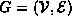. A topological sort of the vertices of G is a sequence 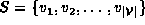 in which each element of 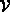 appears exactly once. For every pair of distinct vertices 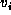 and 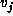 in the sequence S, if 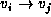 is an edge in G, i.e., 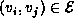, then i<j.
Informally, a topological sort is a list of the vertices of a DAG
in which all the successors of any given vertex
appear in the sequence after that vertex.
Consider the directed acyclic graph 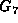 shown in Figure  .
The sequence 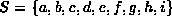 is a topological sort
of the vertices of .
To see that this is so,
consider the set of vertices:
.
The sequence 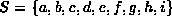 is a topological sort
of the vertices of .
To see that this is so,
consider the set of vertices:
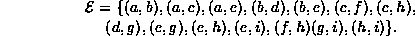
The vertices in each edge are in alphabetical order, and so is the sequence S.
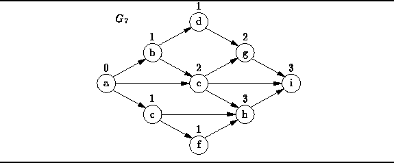
Figure: A directed acyclic graph.
It should also be evident from Figure that
a topological sort is not unique.
For example, the following are also valid topological sorts
of the graph :
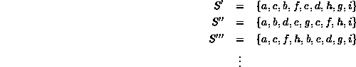
One way to find a topological sort
is to consider the in-degrees of the vertices.
(The number above a vertex in Figure is the in-degree of that vertex).
Clearly the first vertex in a topological sort must have in-degree zero and
every DAG must contain at least one vertex with in-degree zero.
A simple algorithm to create the sort goes like this:
Repeat the following steps until the graph is empty:
 Copyright © 1998 by Bruno R. Preiss, P.Eng. All rights reserved.
Copyright © 1998 by Bruno R. Preiss, P.Eng. All rights reserved.